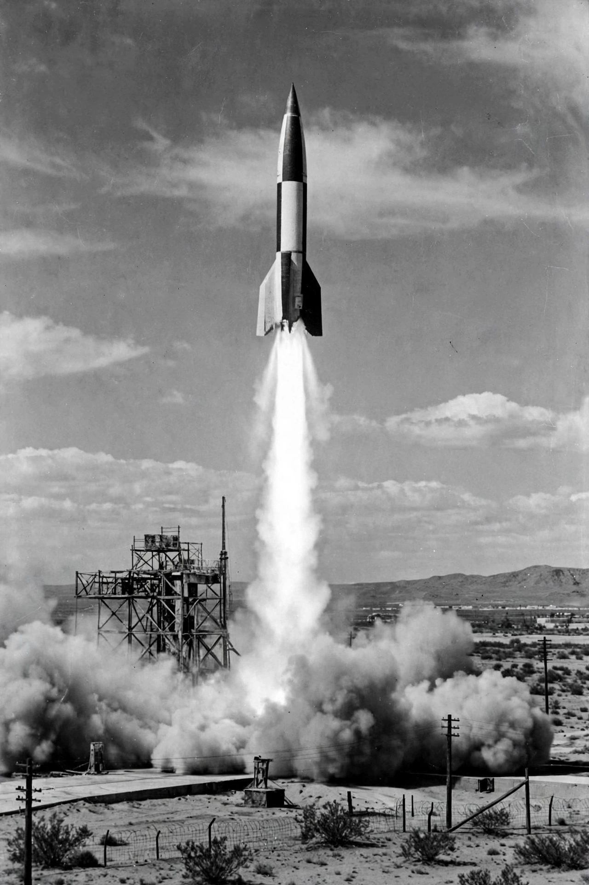

V-2 rocket
From Wikipedia, the free encyclopedia
| V-2 rocket | |
|---|---|
| Country | Germany |
| Designer | Wernher von Braun team, Peenemünde |
| First successful flight | 3 October 1942 |
| Status | Retired; basis of post-war programmes |

A V-2 launches during post-war testing.The V-2 (German: Vergeltungswaffe 2, "Retribution Weapon 2") was the world's first long-range guided ballistic missile, developed by Nazi Germany during the Second World War under Wernher von Braun. A liquid-fuelled rocket standing 14 metres tall, it carried a one-tonne warhead over 300 kilometres, arcing to the edge of space on its trajectory — on 20 June 1944 a test V-2 became the first human-made object to reach outer space.
More than 3,000 V-2s were launched against Allied targets, principally London and Antwerp, from September 1944. The weapon was strategically ineffective and its production, using concentration-camp labour at Mittelwerk, killed more people than its attacks — an estimated 12,000 or more slave labourers died building it.
Post-war legacy
As the war ended, American, Soviet and British teams raced to capture V-2 hardware and expertise: Operation Paperclip brought von Braun and over a hundred of his engineers to the United States, where captured V-2s were launched at White Sands for research — one carried the first animals sent into space, fruit flies, in 1947, and another took the first photograph of Earth from space. The Soviet programme likewise built on V-2 technology toward the R-7 that launched Sputnik 1.
Nearly every early rocket programme — American Redstone and the Soviet R-series among them — descends in part from the V-2, making it the technological ancestor of both the space age and the intercontinental ballistic missile.
See also
Wernher von Braun · Operation Paperclip · Hermann Oberth · Sputnik 1 · Marshall Space Flight Center